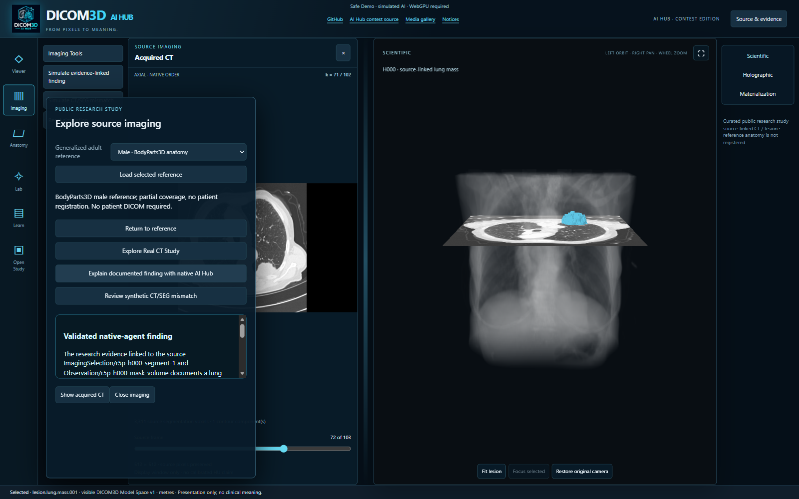
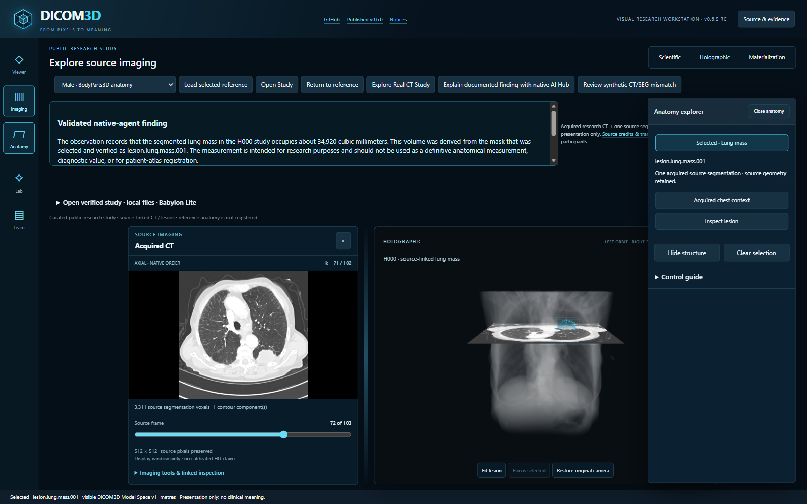
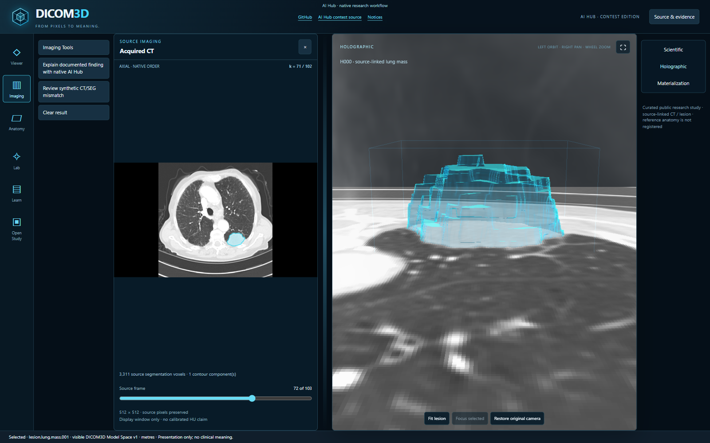
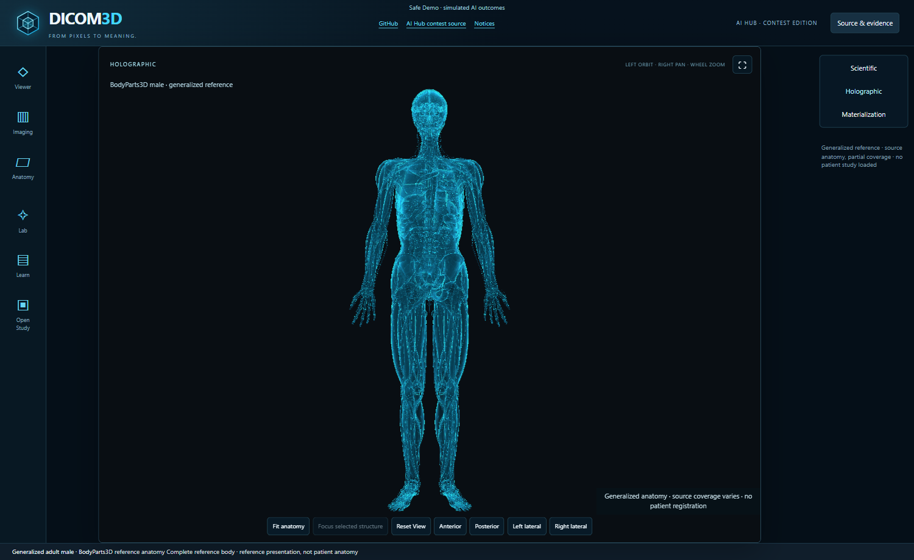
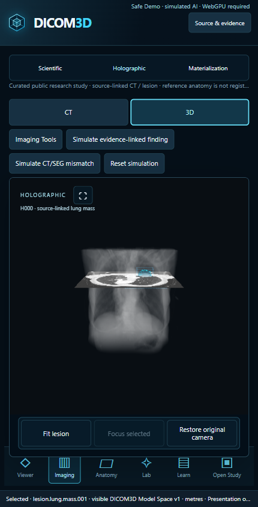

A visual record of the research workflow and the interactive Safe Demo. These are separate captures: the demo simulates AI outcomes and does not run the native agent. The imaging example is public research data, not a clinical interpretation.
Evidence tour
Download the video (WebM, 5.1 MiB)
Silent, 87-second evidence tour. Historical native-workflow stills, a separate manual presentation and a recording of the simulated Safe Demo are labeled in the video; this is not a continuous native execution. The connected interface shown in the historical stills is a local prototype.
Application captures


One real native-agent decision using installed experimental classes and a public-research fixture selected the H000 lesion. This separate local test used a private bridge injected into the Safe Demo viewer; the public demo itself remains simulated. One run does not establish reliability or clinical validity.


Validated explanation and selected lung mass. Its citation lines are below the captured scroll position; this image alone does not show them.


Separately captured CT segmentation fill and lesion framing. This is not a new native-agent decision.


Initial Scientific view of the expanded BodyParts3D reference, showing the skeleton and major organs. Additional source structures remain available; the atlas is not registered to patient imaging.


Current compact 3D study view in a desktop browser viewport. The study was loaded without native inference; this is not a physical-phone test.
Source and limitations
Expanded BodyParts3D © Database Center for Life Science, CC BY 4.0; see its source notice. The separately packaged native reference retains its historical notice. The research CT and segmentation are from public QIN-Lung under CC BY 3.0; see the asset and attribution notes and TCIA usage policy. Review all notices before redistribution.
The Safe Demo requires WebGPU in the qualified build. Mobile hardware, sustained performance and thermal behavior remain unqualified. Images are research presentations and do not establish diagnosis, anatomical accuracy or patient registration.
No simulated outcome is presented as a live native-agent execution.